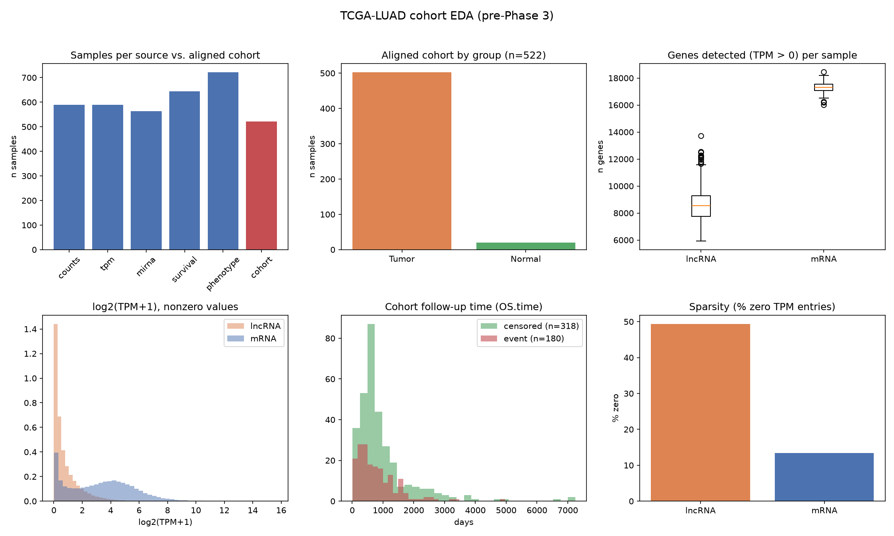
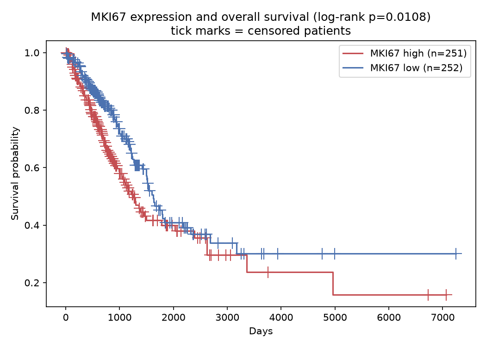
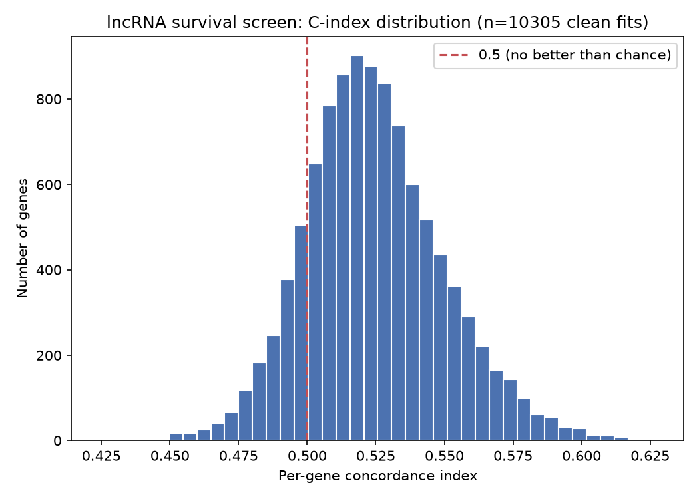
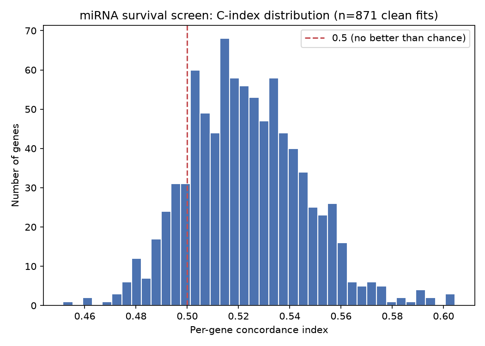

Ranking lncRNA and miRNA drug targets in lung adenocarcinoma
TCGA-LUAD carries expression and clinical data for roughly 17,000 candidate lncRNAs and 1,900 miRNAs. A handful drive real cancer biology — often by acting as competing endogenous RNAs (ceRNAs), sponging a shared miRNA to de-repress its other targets; most don't. This pipeline tests that ceRNA hypothesis computationally at scale: it ranks the full candidate pool by combining four independent evidence streams, then checks at every step whether the ranking is actually predicting anything or just replaying its own training labels back at us.
Code: github.com/ShaunTheProgrammer/ncrna-luad
Background
Lung adenocarcinoma (LUAD) is the most common subtype of non-small-cell lung cancer. Most existing targeted therapies act on protein-coding driver genes (EGFR, KRAS, ALK); long non-coding RNAs (lncRNAs) and microRNAs (miRNAs) are comparatively unexplored as targets, despite two properties that make them attractive candidates: their expression tends to be more tissue- and cancer-type-specific than most protein-coding genes, which matters for therapeutic selectivity, and they are directly addressable with antisense oligonucleotides (ASOs) or siRNAs — a route that doesn't require the binding pocket a small-molecule inhibitor needs.
Goals
This project has three concrete aims:
- Produce a ranked, LUAD-specific shortlist of candidate lncRNAs and miRNAs credible enough to justify experimental follow-up — not a list of anything merely correlated with lung cancer in general.
- Test whether combining independent evidence streams outperforms any single stream, and quantify that improvement rather than assert it.
- Guard against the specific ways this kind of pipeline usually fools itself — label leakage, circular features, pan-cancer signal passed off as LUAD-specific, and statistical artifacts from highly-connected network hubs — and report plainly which claims survive that scrutiny and which don't.
Dataset
All clinical and expression evidence comes from TCGA-LUAD — The Cancer Genome Atlas's lung adenocarcinoma cohort, the largest public, uniformly processed genomic and clinical resource for this cancer type: STAR-aligned RNA-seq (60,660 genes × 589 samples), matched miRNA-seq, and clinical/survival annotation. After reconciling sample identity and data completeness across all four raw sources (RNA-seq counts, RNA-seq TPM, miRNA-seq, clinical/survival), the aligned cohort used for differential expression and survival is 522 samples — 502 tumor, 20 matched normal. The lncRNA–miRNA–mRNA interaction evidence used below (ceRNA and CLIP-seq binding data) comes from external interaction databases (ENCORI/starBase, miRTarBase), not from TCGA itself.
Exploratory data analysis
Before any modeling, the aligned cohort was checked directly rather than assumed: how much data actually survives reconciliation across the four raw sources, whether tumor and normal samples are balanced enough for differential expression, and whether a per-gene survival association is even feasible at this sample size before running it at scale.




Methodology
Four independent evidence streams feed a single composite score per candidate:
- Clinical signal — differential expression and Cox survival association, computed directly from TCGA-LUAD.
- Association evidence — a positive-unlabeled (PU) classifier trained against curated cancer-ncRNA labels (Lnc2Cancer, HMDD).
- Mechanism evidence — a ceRNA/co-expression network layer, built around the competing endogenous RNA (ceRNA) hypothesis: a transcript that shares microRNA response elements (MREs) with a target mRNA can act as a molecular "sponge," competitively binding the shared miRNA and de-repressing — increasing the expression of — that miRNA's other targets. Under this model, a lncRNA can indirectly promote or suppress a cancer phenotype by soaking up a miRNA that would otherwise silence an oncogene or tumor suppressor, without ever binding DNA or protein itself. This stream looks for candidate lncRNA–miRNA–mRNA triplets where shared-miRNA binding evidence and expression co-variation line up.
- LUAD-relevance gate — an explicit filter that removes candidates whose signal is pan-lung or pan-cancer rather than LUAD-specific.
Each of these is individually weak, or fools itself in a known way: differential expression finds bystander correlates of tumor state as readily as drivers; literature-curated labels are frequently pan-cancer rather than LUAD-specific, and are themselves incomplete; a ceRNA relationship can be asserted for almost any well-connected lncRNA if the statistics aren't corrected for neighborhood size (see the hub-lncRNA saturation issue below). The goal isn't to trust any single stream, but to find candidates supported by independent, converging evidence — and to keep testing whether that convergence is real signal or an artifact of how the pipeline itself was built (see A few decisions that shaped the result, below). The output is a confidence-tiered shortlist — not a single p-value cutoff — because the streams disagree about different candidates for different reasons, and collapsing that disagreement into one number would hide it.
Association-model features: Tier 1 vs. Tier 2
The PU-learning association model (stream 2) is trained on two feature tiers — a different, unrelated use of the word "tier" from the confidence tiers the shortlist gate assigns later; the project keeps both names on purpose rather than inventing a third term, so it's worth being explicit here. Tier 1 features are intrinsic to the gene: computable from its sequence and genomic coordinates alone, independent of TCGA-LUAD, and leakage-safe by construction. Tier 2 features are derived from this project's own TCGA-LUAD cohort — real predictive power, but the reason the temporal-split validation above and the dbDEMC decision below both exist.
| Tier 1 (intrinsic, leakage-safe) | Transcript length (median, max) · exon count (median, max) [lncRNA only] · isoform count [lncRNA only] · genomic span · strand · overlaps a protein-coding gene, sense or antisense · distance to the nearest protein-coding gene |
|---|---|
| Tier 2 (TCGA-LUAD-derived) | DE log2 fold-change · DE adjusted p-value · DE-hit flag · survival hazard ratio · survival concordance index · survival adjusted p-value (q) · mean expression · detection rate · expression dispersion |
Both tiers are computed once per candidate and reused for both
the leakage-safe (pu_tier1_only_score) and full
(pu_full_score) versions of the association score
reported in every dossier — the two are never collapsed
into one undifferentiated number.
The LUAD-relevance gate, precisely
Phase 4's association labels span LUAD, LUSC, NSCLC, SCLC, and "lung cancer" generically — a lung-broad positive set, needed because LUAD-only labels were too sparse to train on by themselves. That means association evidence alone can't tell LUAD-specific biology apart from pan-lung biology. The gate is what makes that distinction explicit: a candidate reaches confidence tier 1 (the only tier eligible for the shortlist) only if it clears at least one of three criteria, checked directly against the TCGA-LUAD cohort itself — lung-broad association status by itself is not enough:
- a significant differential-expression hit (tumor vs. normal, in TCGA-LUAD)
- a significant Cox survival association (in TCGA-LUAD)
- membership in the intersection of both from the Phase 3 DE-and-survival screen
This is the literal "train broad, rank narrow" design: broad labels make the association model trainable at all, but nothing reaches the top of the final ranking on lung-broad credit alone — it has to show its own LUAD-specific signal.
| Candidates scored | 16,901 lncRNA · 1,881 miRNA |
|---|---|
| Tier-1 shortlist | 20 lncRNA · 20 miRNA |
| PU-learning positives | lncRNA: 100 strict-LUAD / 271 lung-broad (Lnc2Cancer) · miRNA: 96 strict-LUAD / 365 lung-broad (HMDD, causal-evidence codes only) |
| Literature enrichment | lncRNA OR = 35.1, p = 8.0×10⁻¹³ · miRNA OR = 30.2, p = 2.1×10⁻⁷ |
| Temporal validation | lncRNA AP signal 13.4× noise · miRNA AP signal 25.0× noise |
Pipeline phases
Differential expression & survival
Tumor-vs-normal DE (pydeseq2) and Cox survival association from TCGA-LUAD RNA-seq and phenotype data. These features are quarantined from the label set in every later phase, so the model can't be evaluated against a label that's really just a restatement of one of its own inputs.
Positive-unlabeled association model
PU-bagging over an Elkan–Noto classifier, trained on curated cancer-ncRNA labels (Lnc2Cancer for lncRNA, HMDD for miRNA), with a Tier-1/Tier-2 feature split separating intrinsic sequence/genomic features from network-derived ones.
Heterogeneous network & mechanism layer
A lncRNA–miRNA–mRNA edge set built from CLIP-seq and miRTarBase evidence, feeding per-lncRNA ceRNA/co-expression mechanism dossiers and node2vec embeddings.
Shortlist integration
A tier-gated composite score plus the LUAD-relevance gate produces the ranked shortlist, extended to full lncRNA/miRNA parity including temporal-split validation for both.
Retrospective validation & flagship proposal
Systematic literature search on the label-unsupervised top candidates, and a flagship candidate (MIR9-1HG) proposed for experimental follow-up.
Results
Outcomes against the three goals
- A ranked, LUAD-specific shortlist — delivered. 20 lncRNA and 20 miRNA candidates, every one past the LUAD-relevance gate and sitting in confidence tier 1. 19/20 lncRNA and 7/20 miRNA candidates clear all three independent evidence streams; the rest clear at least two. None of this list is a single-signal artifact.
- Combining streams beats any single stream, quantified. Both shortlists carry a 30–35× enrichment for prior cancer literature over their respective candidate pools (Fig. 2). The association stream's advantage over an intrinsic-feature-only baseline survives temporal validation at the AP level for both modalities (13.4×/25.0× noise, Fig. 3); the top-k recall-level advantage survives for miRNA but not lncRNA, so that stronger claim is scoped to miRNA only. Perturbing every composite weight by ±20% independently, plus 20 random joint perturbations, never drops the shortlist's overlap with the baseline below a Jaccard index of 0.905 — the ranking is not an artifact of the specific hand-chosen weights.
- Guard against known failure modes, report plainly — done. Caught and fixed: a circular miRNA label source (dbDEMC), a shared CLIP-evidence floor that was silently starving the lncRNA network layer, and a hub-lncRNA neighborhood-size artifact in pathway enrichment. Caught and disclosed rather than smoothed over: the lncRNA recall-level claim above, the exact top-20 membership's sensitivity to which positive set trains the association model (20% top-20 overlap under a strict-LUAD-only retrain, despite genome-wide rho = 0.84), and the MIR9-1HG case below, where a defensible exclusion rule turned out to have cut the wrong way.
The shortlist is not just replaying its training labels
8 of the 20 lncRNA candidates and 18 of the 20 miRNA candidates
were PU-learning training positives — genes the model
already knew were cancer-associated before it ranked anything.
The real test is the other 12 lncRNA and 2 miRNA: candidates the
model ranked highly with no label to go on. A systematic
literature search found independent support for 9 of the 12
lncRNA and both miRNA — real biology the label set had
simply missed. The remaining 3 lncRNA candidates
(PACRG-AS3, MIR9-1HG,
AC133785.1) have no functional cancer study on
record anywhere: they're the pipeline's novel, unlabeled
predictions.
data/processed/shortlist_top20.tsv /
mirna_shortlist_top20.tsv (training-positive flag) cross-referenced against
the literature search in docs/phase7_validation_report.md.Full shortlist — lncRNA (20)
Status follows the split above: training positive (known by construction), recovered known (unlabeled but literature-confirmed), or novel (unlabeled, no study found). Mechanism and supporting evidence are reported per gene, not as a separate category.
| Rank | Gene | Status | Mechanism & evidence |
|---|---|---|---|
| 1 | PACRG-AS3 | Novel | No mechanism stream (outside dossier scope); no dedicated study found in any cancer type. |
| 2 | FAM83A-AS1 | Training positive | Co-expression mechanism; LUAD HIF-1α/glycolysis axis independently reported (2022). |
| 3 | Z98257.1 | Recovered known | Co-expression mechanism; ovarian-cancer prognostic panel, no LUAD-specific study. |
| 4 | MIR9-1HG | Novel | ceRNA mechanism; no study on the transcript itself — see the flagship case below. |
| 5 | LINC01559 | Recovered known | Co-expression mechanism; direct LUAD metastasis mechanism reported (2024). |
| 6 | AC133785.1 | Novel | Co-expression mechanism; no study found under this identifier, any cancer. |
| 7 | COLCA1 | Recovered known | ceRNA mechanism; CRC GWAS susceptibility locus, no LUAD-specific study. |
| 8 | UCA1 | Training positive | ceRNA mechanism; LUAD growth/cisplatin-resistance role independently reported. |
| 9 | LINC00887 | Recovered known | Co-expression mechanism; renal-cell-carcinoma biomarker, no LUAD-specific study. |
| 10 | DLX6-AS1 | Training positive | ceRNA mechanism; upregulated in 60/72 LUAD tumors vs. adjacent normal (2015). |
| 11 | FOXD3-AS1 | Training positive | Co-expression mechanism; LUAD/LUSC/SCLC biomarker study. |
| 12 | KCNMB2-AS1 | Training positive | Co-expression mechanism; miR-374a-3p/ROCK1 axis, up in LUAD+LUSC. |
| 13 | AC022784.1 | Recovered known | Co-expression mechanism; likely LUAD growth/metastasis biomarker (identifier match not fully certain). |
| 14 | LINC00460 | Training positive | Co-expression mechanism; miR-302c-5p/FOXA1 axis drives LUAD growth. |
| 15 | SATB2-AS1 | Recovered known | Co-expression mechanism; tumor-suppressive in CRC, oncogenic in osteosarcoma; no LUAD-specific study. |
| 16 | LINC00968 | Training positive | Co-expression mechanism; LUAD-specific ceRNA papers (miR-9-5p/CPEB3, miR-21-5p/SMAD7). |
| 17 | AC245041.2 | Recovered known | Co-expression mechanism; pancreatic-adenocarcinoma survival association, no LUAD-specific study. |
| 18 | LASTR | Recovered known | Co-expression mechanism; direct LUAD prognostic biomarker, immune-infiltrate association (2023). |
| 19 | TARID | Training positive | Co-expression mechanism; demethylates/activates tumor suppressor TCF21. |
| 20 | SCAT1 | Recovered known | Co-expression mechanism; unconfirmed HNSCC panel mention, no LUAD-specific study. |
Full shortlist — miRNA (20)
| Rank | Gene | Status | Evidence |
|---|---|---|---|
| 1 | hsa-mir-210 | Training positive | HIF-1α/CCL2 axis; independent DFS prognostic factor. |
| 2 | hsa-mir-9-1 | Training positive | SOX7-mediated, adverse features in NSCLC. |
| 3 | hsa-mir-9-2 | Training positive | Same locus family as mir-9-1. |
| 4 | hsa-mir-9-3 | Training positive | Same locus family as mir-9-1. |
| 5 | hsa-mir-486-1 | Training positive | CDK4 repression; tumor-suppressive. |
| 6 | hsa-mir-486-2 | Training positive | Same locus family as mir-486-1. |
| 7 | hsa-mir-708 | Recovered known | Increased in NSCLC, poor survival in never-smoker LUAD (2012). |
| 8 | hsa-mir-21 | Training positive | Textbook oncomiR; PTEN/SOCS1/SOCS6 mechanism. |
| 9 | hsa-mir-183 | Training positive | Oncogenic in LUAD; early-stage diagnostic value. |
| 10 | hsa-mir-96 | Training positive | ARHGAP6 and FHL1 axes. |
| 11 | hsa-mir-133a-1 | Training positive | Tumor-suppressive, matches DOWN direction. |
| 12 | hsa-mir-144 | Training positive | EZH2/IRS1 axis. |
| 13 | hsa-mir-182 | Training positive | Oncogenic in LUAD (a separate, retracted mechanism paper is not relied upon). |
| 14 | hsa-mir-135b | Training positive | Oncogenic enhancer-switching study (2024); contradicts literature on survival direction. |
| 15 | hsa-mir-451a | Training positive | Tumor-suppressive in LUSC/NSCLC. |
| 16 | hsa-mir-1-1 | Training positive | miR-1-3p/PRC1, tumor-suppressive specifically in LUAD. |
| 17 | hsa-mir-200a | Training positive | miR-200/CX3CR1 in the LUAD tumor microenvironment. |
| 18 | hsa-mir-1-2 | Training positive | Same locus family as mir-1-1. |
| 19 | hsa-mir-30a | Recovered known | 2021–2025 LUAD literature; ECT2/CTHRC1/MYBL2 mechanism follow-ups. |
| 20 | hsa-mir-7-1 | Training positive | NOVA2/metastasis, Pax6; contradicts literature on direction (data show UP, literature predicts DOWN). |
The shortlist recovers known biology above chance
Across the full 20-candidate shortlists, 65% of lncRNA candidates and 95% of miRNA candidates carry prior cancer annotation, against 5.1% and 39.2% baseline rates in the full candidate pools. Training positives account for part of that gap by construction; the per-gene tables above are what let you see exactly how much.
The association signal is prospective, not memorized
A random train/test split lets a classifier look predictive by memorizing labels that leak across the split. The association model was instead retrained on associations reported before a cutoff year and evaluated only on ones reported after it — a genuine prospective test. The average-precision advantage of the full model over an intrinsic-feature-only baseline holds for both modalities; the top-k recall advantage holds for miRNA only. The lncRNA recall numbers from random cross-validation don't survive this test, so they're scoped out of the results above rather than reported at their inflated magnitude.
A few decisions that shaped the result
Quarantining dbDEMC as a label source
dbDEMC is a large, commonly used source of "cancer miRNA" labels.
It was excluded after auditing what its evidence actually is:
mostly differential-expression and biomarker-profiling studies
— the same category of signal already sitting in the model
as a Tier-2 feature. Training on it would mean the label is, in
part, a re-derivation of a feature the model can see, which
inflates apparent performance without adding information. The
same audit was then applied to HMDD, which turned out to have the
identical failure mode buried in two of its own evidence codes
(tissue_expression_*, circulation_biomarker_*).
Restricting labels to causal/functional evidence only (knockdown
or overexpression assays, GWAS, therapeutic-target studies) drops
the miRNA positive count from a few thousand to a defensible 96
strict-LUAD / 365 lung-broad — comparable in scale to
lncRNA's own 100/271 from Lnc2Cancer, and free of the circularity.
Different CLIP-evidence floors for different target types
CLIP-seq support for miRNA–mRNA binding is dense enough that a floor of 10 independent experiments is a reasonable bar for "real" evidence. Applying that same floor to miRNA–lncRNA edges was not a neutral choice: lncRNA CLIP coverage is far sparser, and a connectivity audit found the shared 10-experiment floor was starving the lncRNA layer of the graph — leaving most lncRNAs with too few edges for the mechanism layer to say anything about them. The lncRNA floor was relaxed to any CLIP support at all (≥1 experiment), with the old 10-experiment bar repurposed as an internal strong/weak split rather than an inclusion cutoff. The two edge types now have deliberately different thresholds instead of one shared, silently miscalibrated one.
Why the mechanism layer isn't an end-to-end GNN
The same connectivity audit showed the lncRNA side of the graph is sparse with a long tail: most lncRNAs have very few edges, and a handful of hub genes (MALAT1, NEAT1, H19-style transcripts) dominate connectivity. Message-passing has nothing to aggregate for a typical node under those conditions, so the mechanism layer is a hybrid instead: per-gene ceRNA/co-expression dossiers plus node2vec embeddings, rather than a single graph neural network expected to generalize evenly across a graph that isn't uniform enough for that to work. A related bug this surfaced: NEAT1-style hub lncRNAs sponge hundreds of miRNAs, each targeting up to ~3,900 mRNAs, which balloons a naive "shared target" neighborhood to 65–75% of the entire mRNA universe — at that size, pathway enrichment is guaranteed to surface generic terms ("Gene Expression (Transcription)", "Disease") regardless of real biology. A first fix (require ≥2 sponged miRNAs to converge on a target) barely helped, since with hundreds of miRNAs even 2-way convergence is satisfied combinatorially across most of the transcriptome. The dossiers now flag generic-top-pathway-term saturation automatically on every run instead of relying on catching it by eye.